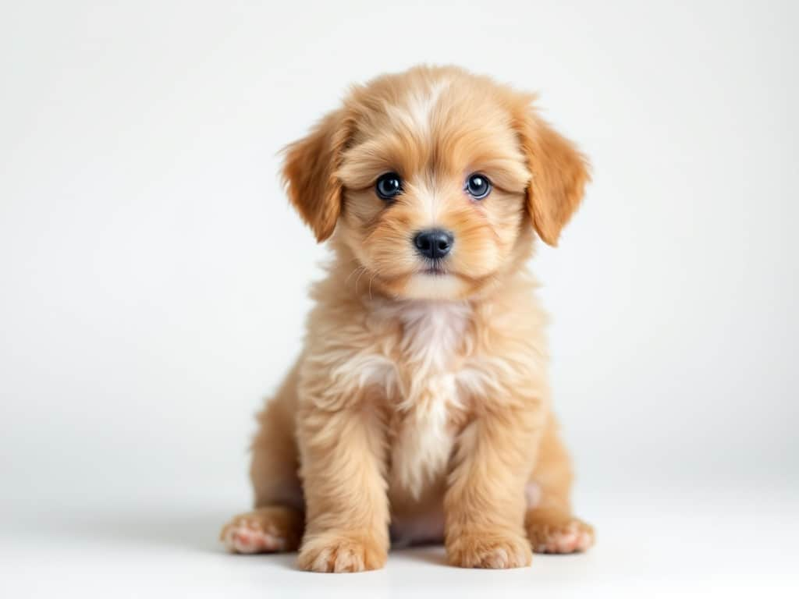

Dales un hogar y encuentra a tu compañero fiel
En Huellas Solidarias creemos que cada animal merece una segunda oportunidad. Descubre a quienes esperan un hogar lleno de cariño y una familia que los acompañe toda la vida.
Conocer mascotas

Guía de cuidados
Todo lo que necesitas saber para recibir a tu nuevo integrante con amor y paciencia.
Leer más →Alimentación
Descubre cuáles son los mejores alimentos naturales para mantener su cola siempre feliz.
Leer más →Salud Mental
El juego es vital. Aprende rutinas de ejercicios para perros que viven en departamentos.
Leer más →No los dejes solos
El abandono es una realidad triste, pero juntos podemos cambiarla. Si ves a un peludo en problemas, avísanos. Cada reporte cuenta.
Reportar ahora